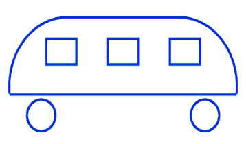

Запитання 1
Перший презедент України
Запитання 2
Хто перший відкрив Америку
- Колумб
- Васко да Гама
- Петро I
- Вікинги
Запитання 3
2+2*2=
Запитання 4
В якому році відбулося хрещення Русі
Запитання 5
Джордж Вашингтон, Шерлок Холмс , Людвіг Ван Бетховен, Наполеон Бонапарт, Вільям Шекспір і Нерон - хто з них принципово відрізняється від інших?
- Джордж Вашингтон
- Наполеон Бонапарт
- Шерлок Холмс
- нема зайвого
- Вільям Шекспір
- Нерон
- Людвіг Ван Бетховен
Запитання 6
В 12-поверховому будинку є ліфт. На першому поверсі живе всього 2 людей, від поверху до поверху кількість мешканців збільшується вдвічі. На якому поверсі в цьому будинку частіше інших натискається кнопка виклику ліфта?
- 1
- 2
- 3
- 4
- 5
- 6
- 7
- 8
- 9
- 10
- 11
- 12
- однаково
Запитання 7
На гілці сиділо три пташки, дві вирішило полетіти. Скільки залишилося сидіти на гілці пташок?
Запитання 8
Визначте в яку сторону їде автобус на рисунку: вліво чи вправо? Діти із дитсадка майже миттєво на неї вірно відповідають!
